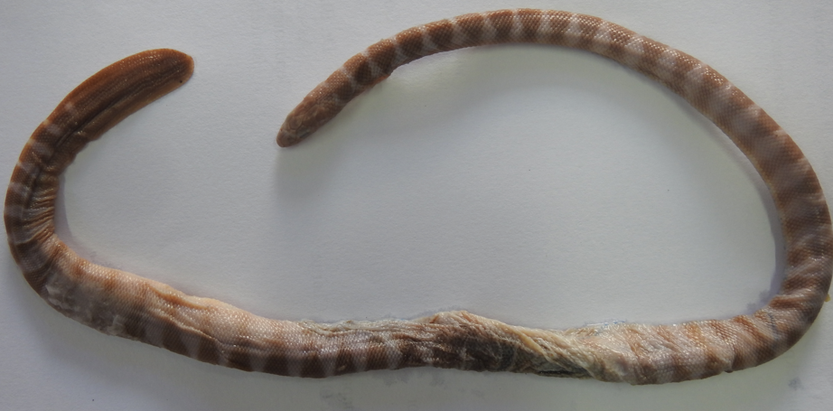

×
Hydrophis ornatus (Gray, 1842)
Ornate Reef Sea snake
Squamata
Elapidae
Least Concern
Oar-like tail. Rhomboidal bars or bands with narrower interspace of light colour and light colour belly.
Ovoviviparous. Marine. Venomous. Found in coral reefs, turbid inshore waters, and estuaries. Eats fish.
Buxapalli in-shore water, Ganjam, Odisha
Indian Ocean, Papua New Guinea, South Chinese Sea, Persian Gulf through Indian Ocean, Indoaustralian Archipelago, South-East Asia, Australia.